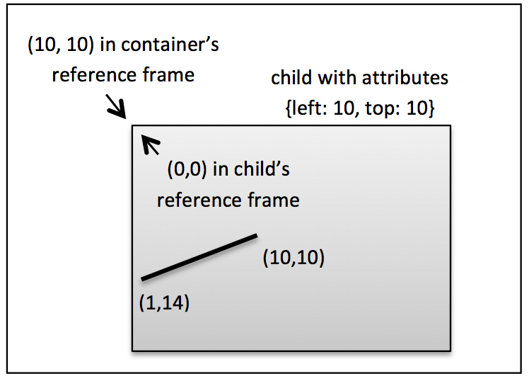

<canvas> Drawing LibraryDue: Wednesday, October 14, 2015 by 8:00pm
The goal of this project is to create a re-usable drawing library for creating interactive content on the <canvas> tag. Some pre-existing libraries are Raphael, Processing, and fabric.js. For this project, you’re going to write your own drawing library, and then use this library to create an interesting doodle of your own!
The following files are in the same .zip folder as this project description was in:
This project has two parts. The first part is to create a drawing library for <canvas> that provides a few basic functions to make drawing using canvas easier. The second part is to use your library to create a cool doodle (ideas at http://www.google.com/logos/).
Your drawing library must implement the objects specified below. Your objects should have at least the methods and attributes specified below (though you may add more if you wish). The utils.js file provides a mechanism for executing inheritance, as well as other useful functions for setting default values. Inheritance has already been set up for you in the skeleton code, and you can use it for creating new objects for extra credit.
Your objects will need to follow a specific layout protocol. There is a root entity (a Doodle) which represents the <canvas> element that you’re drawing on. Its purpose is to hold and draw all of the elements in your doodle. It cannot be rotated or translated.
Every drawable object in a doodle has left and top coordinates. Left and top specify the reference frame for the object; when the object draws itself, it treats its left and top as the origin, (0, 0). Therefore, x and y coordinates in the attributes for an object, such as a line or a path, are relative to the object’s left and top.
For example, the figure below shows a container with a single child container. The child container has a left and top of (10, 10), so it is drawn at (10, 10) in the parent’s coordinate system. The line inside the child container, however, treats the left, top point of the container as (0, 0) when drawing its endpoints.

When a container object (such as a Doodle or Container object) draws one of its child elements, it first translates and rotates the child element according to the child’s left and top attributes. It then calls the child’s draw function. The following are specifications for the objects you must implement. Stubs for these objects are provided in the starter code.
A Doodle is the root container for all drawable elements. It represents the canvas on which all other elements will be drawn. When drawing using this library, the first element created is an instance of this Doodle element. Additional elements are added as children to the root Doodle element.
Constructor Parameter:
Methods:
Fields:
Inherits from: Drawable
A Text object draws text with the given attributes. Note: Text is always drawn up from the bottom of the object. This is because there is no simple way to measure the height of a text string using canvas, so we explicitly define it with height.
Constructor Parameter:
Methods:
Fields (in addition to those specified by ancestors):
Inherits from: Drawable
A DoodleImage object draws an image. This may be a bit trickier than the other primitives to implement, because it has to load the image file before being drawn. You can get around this by making draw() wait until the image is loaded, or by making the whole Doodle wait to be drawn until all the images are loading. Your solution here might be a little hacky, that's ok.
Constructor Parameter:
Methods:
Fields (in addition to those specified by ancestors):
Inherits from: Primitive
Draws a single line.
Constructor Parameter:
Methods:
Fields (in addition to those specified by ancestors):
Inherits from: Primitive (already implemented for you)
Draws a rectangle (not filled in).
Constructor Parameter:
Methods (in addition to those specified by ancestors):
Fields (in addition to those specified by ancestors):
Inherits from: Drawable
A container is a rectangular object that can have other drawable objects as children. When drawn, the container draws itself as well as all of its children. All children inside the container are first rotated, then translated to their (left, top) positions and drawn (note: transformations execute in reverse order, so to implement this first do translate, then rotate). The container also clips all of its content to its bounds.
Constructor Parameter:
Methods:
Fields (in addition to those specified by ancestors):
We have provided code for you to test out your drawing library. The test code has two different parts. The first part (test-primitives.html) makes a drawing using only the primitives in your library (i.e. no containers). You should probably start implementing only the primitives, and make sure test-primitives.html works before moving on to the next part. The next part (test-containers.html) tests whether your container code works. test-containers.html assumes that test-primitives.html works, so you should do test this second. We have also included images with the expected output.
Make a doodle similar to a Google doodle to show off your library. Your doodle should have some text in it; however it does not need to say Google. You can use your name as your doodle, for example. I will be grading your doodle based on how interesting it is.
Completing the above requirements and having well-documented code with no errors will get you 45 out of 50 points, which is an A. You must complete one of the below ‘bells and whistles’ to get full points. You can complete as many of these as you want, but you will get no more than 10 points total. Different bonuses are worth different numbers of points, based on difficulty. You may receive up to 10 points for bells and whistles, bringing you up to up to 5 extra credit points.
We will be picking the nicest doodles and showing them to the class. They may also be put on a public website. Please let me know if you do not want your solution shown in the README file in your assignment.
This project has the same procedure as Projects 0 and 1. Make sure to include the following files:
The project is due Wednesday, October 1, 2013 at 8:00 pm. You should turn in your assignment via Blackboard, attaching a zip file with the contents below. Please write a README.txt file which mentions any online sources you used to help with the project, as well as any notes about your programs (i.e. if you couldn’t get a particular part of the project to work). Name the file lastname_firstname_P#.zip. For example: tasse_dan_p2.zip
Your assignment will be graded as follows:
{kind=link}
{kind=link}